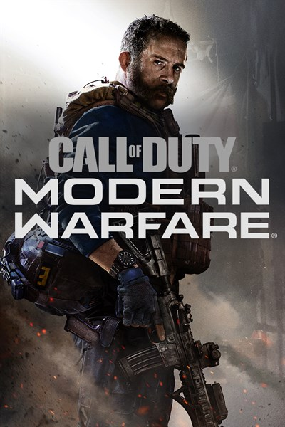

Últimas Notícias
- Novo mapa chega ao multiplayer nesta temporada.
- Atualização ajusta o equilíbrio das armas
- Evento especial libera recompensas por tempo limitado.
 ▶
▶
Os Maiores do Call of Duty
Top 3 Campeões
- Ian "Crimsix" Porter
- Damon "Karma" Barlow
- James "Clayster" Eubanks
Principais Campeonatos
- Call of Duty League Championship (CDL Champs)
- Call of Duty League Majors (CDL Majors)
- Call of Duty Mobile World Championship / Garena Masters
Melhores Armas do Call of Duty
| Categoria | Nome da Arma | Desempenho | Nível de desbloqueio |
|---|---|---|---|
| Fuzil de Assalto | Axion | Meta absoluto (TTK de 255 ms de 0 a 10m; maior taxa de seleção com 14,3%) | Nível 52 |
| Fuzil de Assalto | M4 | Recomendação mais segura, versátil e equilibrada para qualquer distância | Inicial / Padrão |
| Fuzil de Assalto | Kastov 762 | Excelente dano e controle em trocas a média distância | Progressão de nível |
| Submetralhadora (SMG) | VEL 46 | Meta absoluto para curto alcance (TTK de 252 ms de 0 a 10m) | Inicial / Baixo nível |